1D, 2D and 3D Box-counting
F. Moisy, 22 nov 2006 FAST, Univ. Paris Sud, CNRS UMR 7608
Contents
About boxcount
This file illustrates how to use the function 'boxcount' to compute the fractal dimension of 1D, 2D or 3D sets, using the 'box-counting' method (Minkowski-Bouligand dimension, or Kolmogorov capacity, or Kolmogorov dimension, or simply box-counting dimension).
Three sample images are provided in the directory, and an additional function 'randcantor' to generate 1D, 2D and 3D generalized random Cantor sets.
Type 'help boxcount' or 'help randcantor' for more details.
To learn more about box-counting, fractals and fractal dimensions: - http://en.wikipedia.org/wiki/Fractal - http://en.wikipedia.org/wiki/Box_counting_dimension - http://mathworld.wolfram.com/Fractal.html - http://mathworld.wolfram.com/CapacityDimension.html
Box-counting of a 2D image
Let's start with the image 'dla.gif', a 800x800 logical array (i.e., it contains only 0 and 1). It originates from a numerical simulation of a "Diffusion Limited Aggregation" process, in which particles move randomly until they hit a central seed. (see P. Bourke, http://local.wasp.uwa.edu.au/~pbourke/fractals/dla/)
c = imread('dla.gif'); imagesc(~c) colormap gray axis square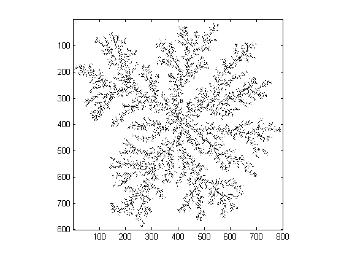
Calling boxcount without output arguments simply displays N (the number of boxes needed to cover the set) as a function of R (the size of the boxes). If the set is a fractal, then a power-law N = N0 * R^(-DF) should appear, with DF the fractal dimension (Kolmogorov capacity).
boxcount(c)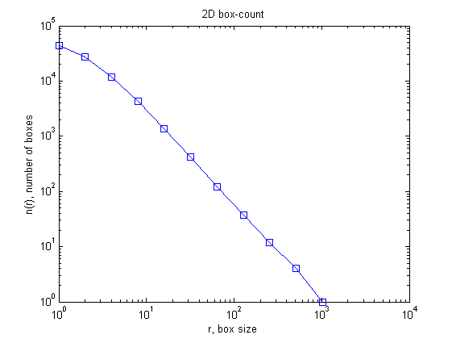
The result of the box count can be obtained using:
[n, r] = boxcount(c) loglog(r, n,'bo-', r, (r/r(end)).^(-2), 'r--') xlabel('r') ylabel('n(r)') legend('actual box-count','space-filling box-count');
n =
Columns 1 through 7
44000 27466 11786 4265 1386 421 121
Columns 8 through 11
37 12 4 1
r =
Columns 1 through 7
1 2 4 8 16 32 64
Columns 8 through 11
128 256 512 1024
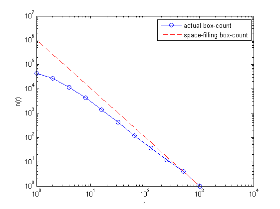 The red dotted line shows the scaling N(R) = R^-2 for comparision, expected for a space-filling 2D image. The discrepancy between the two curves indicates a possible fractal behaviour.
Local scaling exponent
If the set has some fractal properties over a limited range of box size R, this may be appreciated by plotting the local exponent, D(R) = - d ln N / ln R. For this, use the option 'slope':
boxcount(c, 'slope')
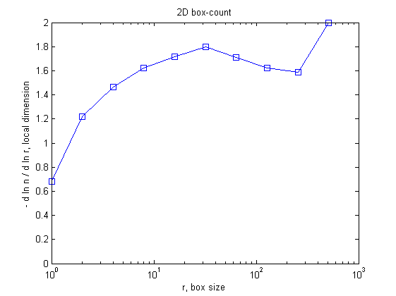 Strictly speaking, the local exponent is not constant, but lies in the range [1.6 1.8].
Let's try now with another image, the so-called Apollonian gasket (Wikipedia, http://en.wikipedia.org/wiki/Image:Apollonian_gasket.gif). The background level is 198 for this image, so this value is used to binarize the image:
){kind=link}
c = imread('Apollonian_gasket.gif'); c = (c<198); imagesc(~c) colormap gray axis square figure boxcount(c) figure boxcount(c,'slope')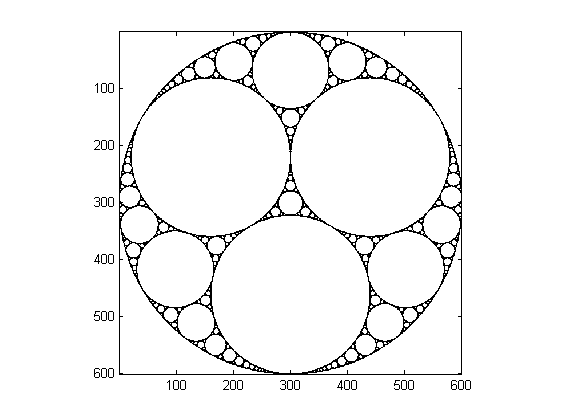 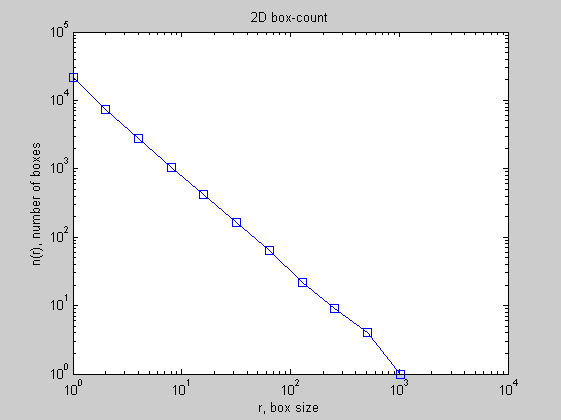 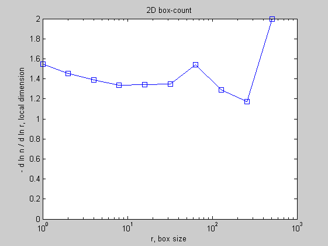
The local slope shows that the image is indeed approximately fractal, with a fractal dimension DF = 1.4 +/- 0.1 for scales R < 100.
Box-counting of a natural image.
Consider now this RGB (2272x1704) picture of a tree (J.A. Adam, http://epod.usra.edu/archive/images/fractal_tree.jpg):
){kind=link}
c = imread('fractal_tree.jpg'); image(c) axis image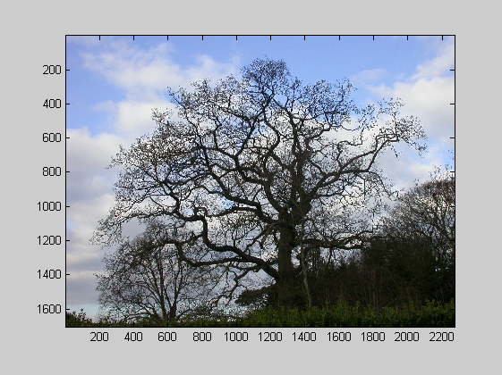
Let's extract a rectangle in the blue (3rd) plane, and binarize the image for levels < 80 (white pixels are logical 'true'):
i = c(1:1200, 120:2150, 3); bi = (i<80); imagesc(bi) colormap gray axis image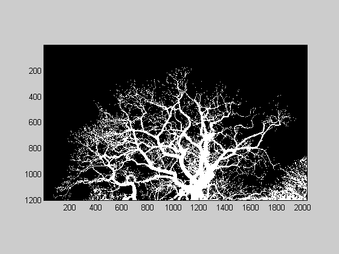
[n,r] = boxcount(bi,'slope');
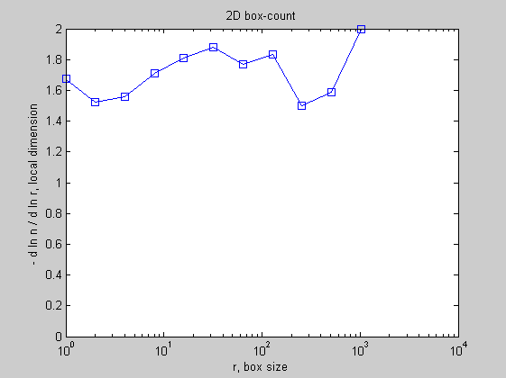 The boxcount shows that the local exponent is approximately constant for less than one decade, in the range 8 < R < 128 (the 'exact' value of Df depends on the threshold, 80 gray levels here):
df = -diff(log(n))./diff(log(r)); disp(['Fractal dimension, Df = ' num2str(mean(df(4:8))) ' +/- ' num2str(std(df(4:8)))]);
Fractal dimension, Df = 1.801 +/- 0.06394
Generalized random Cantor sets
Fractal sets may be obtained from an IFS (iterated function system). For example, the function 'randcantor' generates a 1D, 2D or 3D generalized random Cantor set. This set is obtained by iteratively dividing an initial set filled with 1 into 2^D subsets, and setting each subset to 0 with probability P. The result is a fractal set (or "fractal dust") of dimension DF = D + log(P)/log(2) < D.
The following example generates a 2048x2048 image with probability P=0.8, i.e. fractal dimension DF = 1.678.
c = randcantor(0.8, 2048, 2); imagesc(~c) colormap gray axis image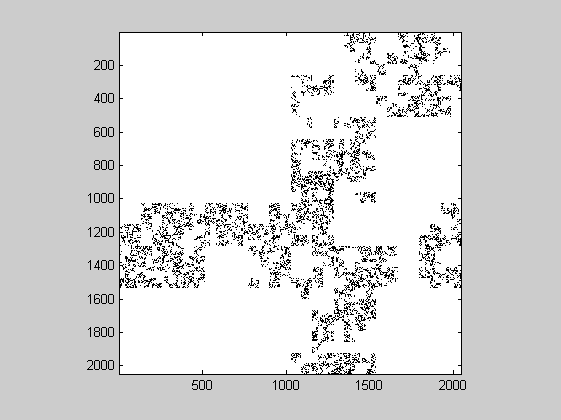
Let's see its box-count and local exponent
boxcount(c)
figure
boxcount(c, 'slope')
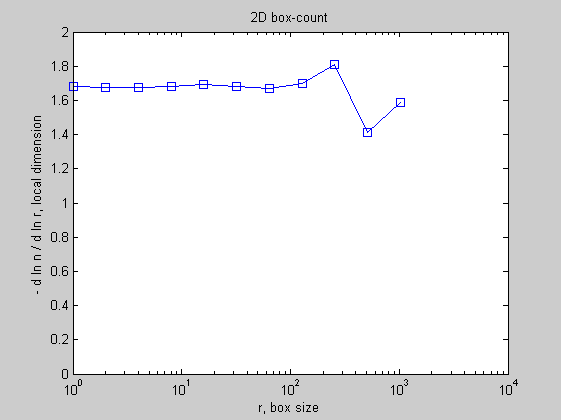 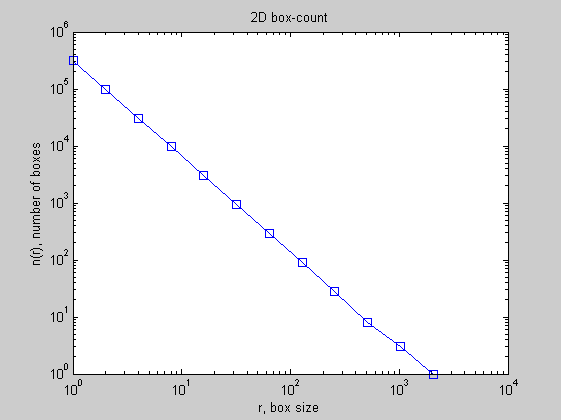 For such set generated by an iterated scheme, the local slope shows as expected a well defined plateau, around DF = 1.68.
1D random Cantor set
1D random Cantor sets may also be generated. Here, a 2^18 = 262144 long set with P = 0.9 and expected fractal dimension DF = 1 + log(P)/log(2) = 0.848:
tic c = randcantor(0.9, 2^18, 1, 'show'); figure boxcount(c, 'slope'); toc
Elapsed time is 3.538424 seconds.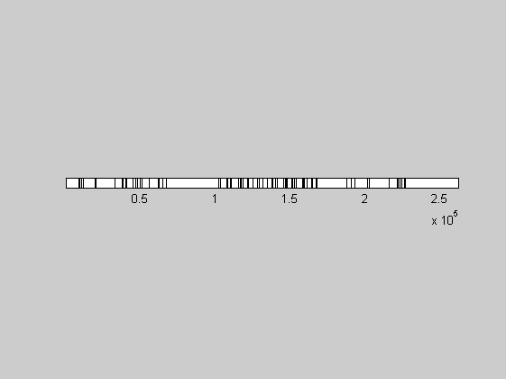 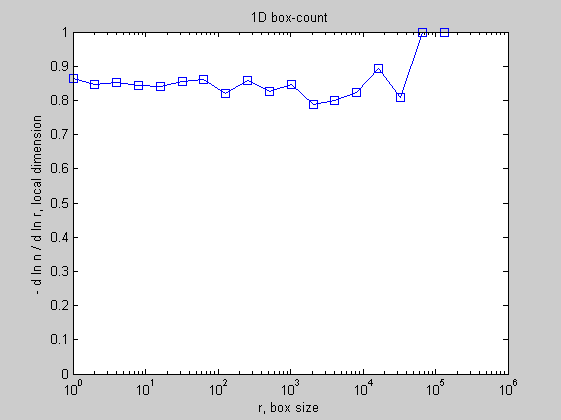
3D random Cantor set
Now a 3D random Cantor set of size (2^7)^3 = 128^3 with P = 0.7 and expected fractal dimension DF = 3 + log(P)/log(2) = 2.485 (no display for 3D sets):
tic
c = randcantor(0.7, 2^7, 3);
toc
tic
boxcount(c, 'slope');
toc
Elapsed time is 8.068590 seconds. Elapsed time is 0.360902 seconds.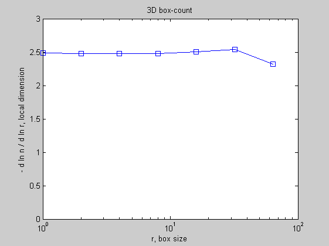